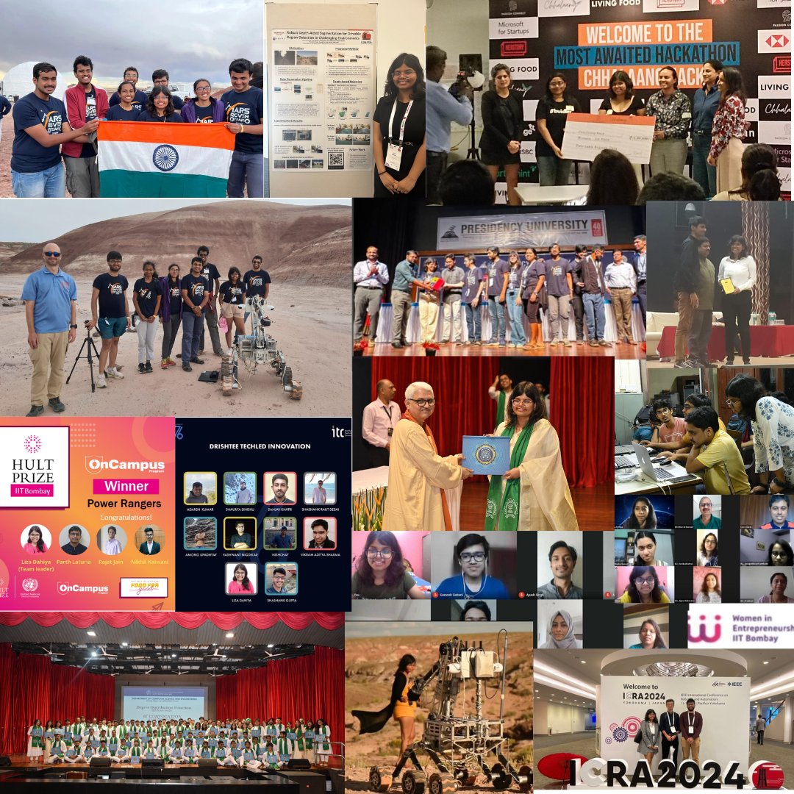

I am currently a MSR student at Carnegie Mellon University working with Prof. Laszlo Jeni and Prof. Max Simchowitz. Largely I am interested in building robotic agents that can one day be deployed in people's homes.
Before this, I spent two beautiful years in Japan soul-searching and working with Honda's RnD lab in Tokyo on vision perception and SLAM pipelines for AVs in unstructured environments.
Before I moved to Tokyo, I was an undergraduate student at IIT Bombay studying Computer Science & Engineering. During my undergrad, I spent a ridiculous amount of nights in the labs of the Mars Rover Team. Some of this resulted in recognition from international rover competitions but mostly equipped me with the ability to pull insane all-nighters. I also spent some time starting my own venture, FeMeal, that helped women combat PCOS which managed to pull in huge community support for the time it was active.
I write stories, sometimes relatable, sometimes useful, but mostly stories that touch my heart. I also have a hobby to collect books and sometime I tend to read from my collection :)
I keep my DMs open for curious conversations, good collaborations and building ideas!
